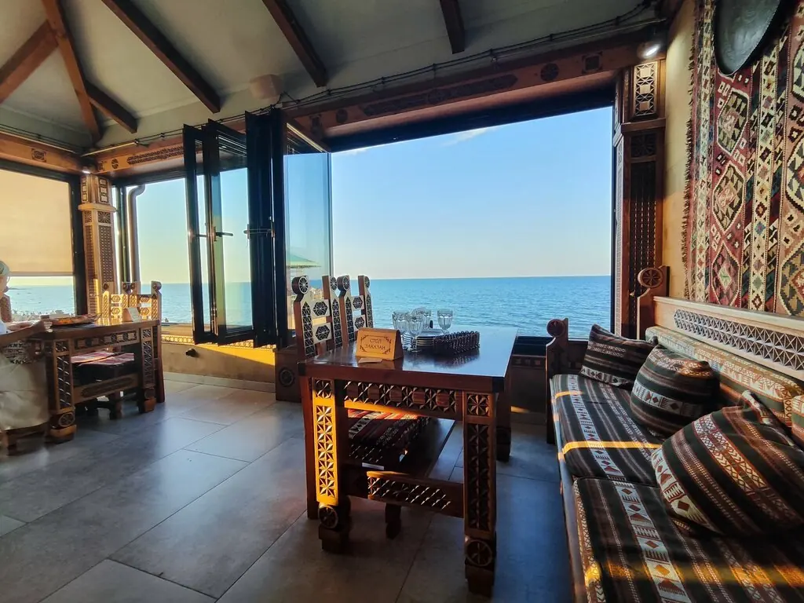
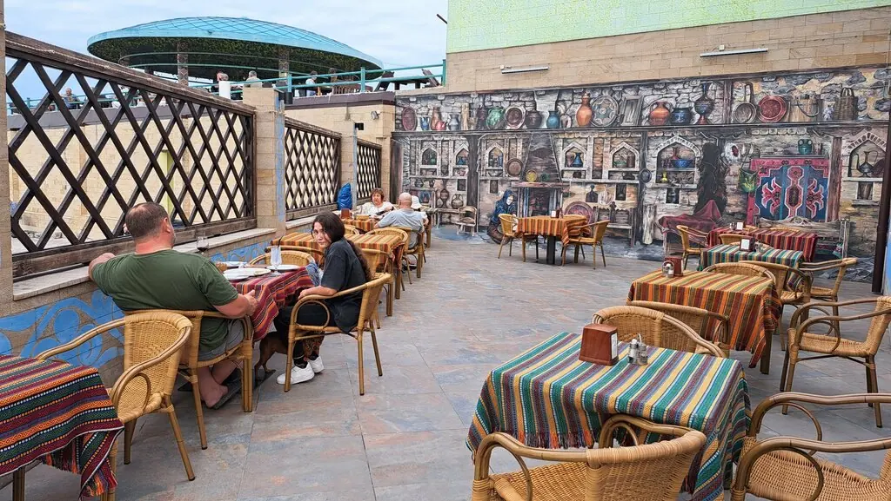
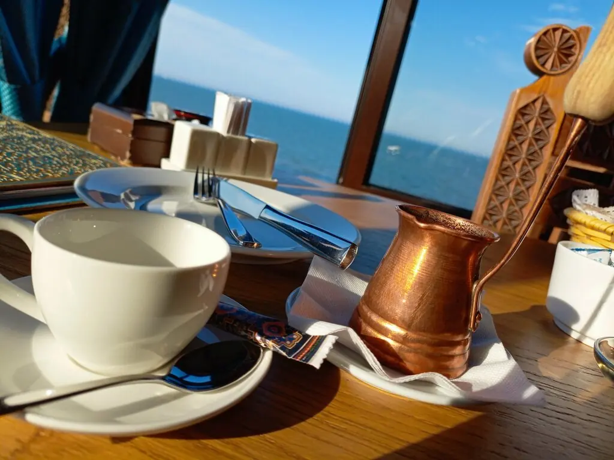
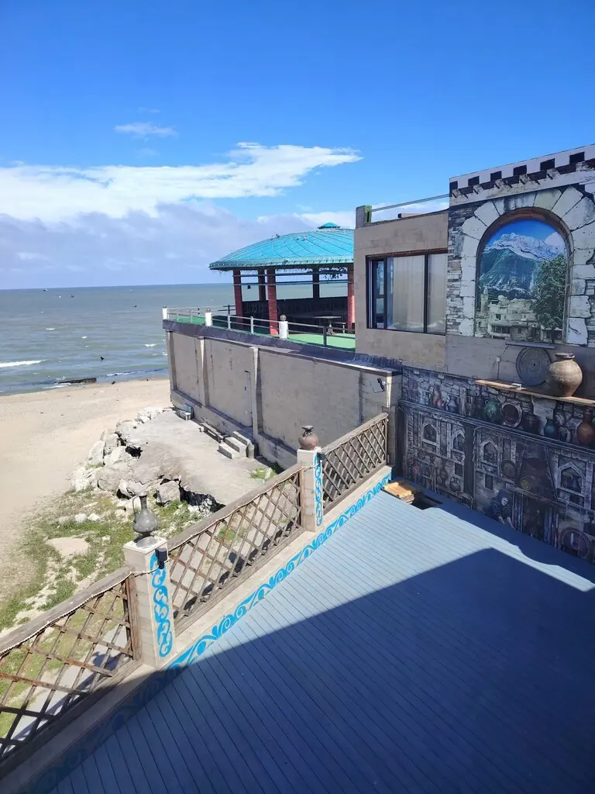
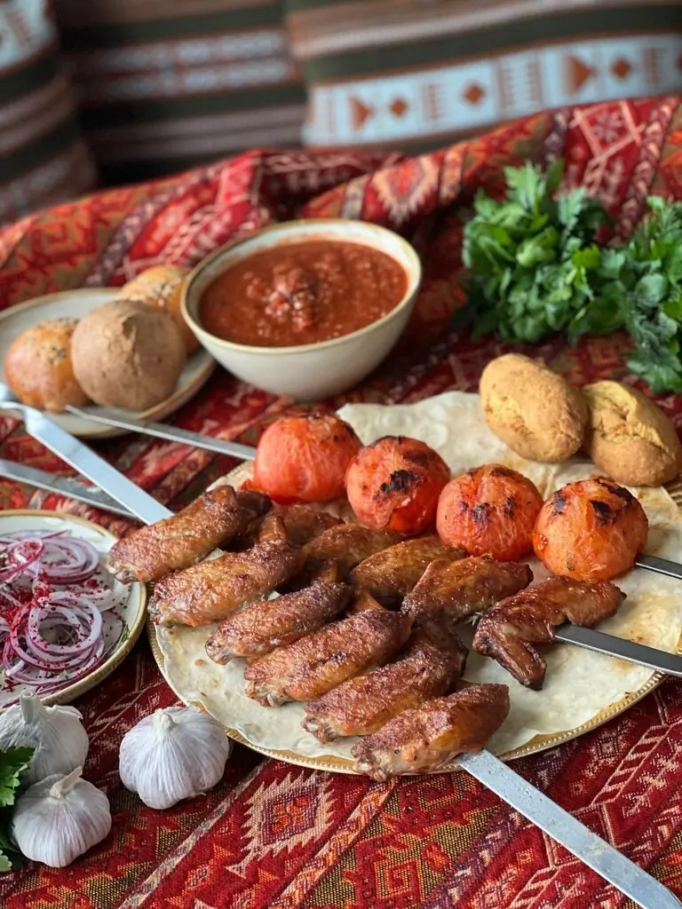

Махачкала+7 928 510-90-96

Джага
Этно-ресторан прямо у Каспия. Ковры на стенах, море за окном, и никуда не хочется спешить.
5,0 · 4399 оценок
Вид дороже меню
Но и меню неплохое. Терраса, кабинки и зал на 70 гостей.




На столе
Салат «Джага»380 ₽
Руккола с говядиной и вялеными помидорами460 ₽
Салат «Мужской каприз»430 ₽
Тёплый салат с куриной печенью350 ₽
Шашлык и местные блюдапо меню
Часть меню из 2ГИС. Полное меню с ценами добавим из вашего прайса.
Говорят
Рядом с пляжем, прекрасный вид на Каспий. Готовят вкусно, порции большие.Ольга Горшкова
Всё вкусно, персонал добрый и отзывчивый! Прекрасный вид с террасы на море!Владислав Ещенко
Жареные креветки заказывайте и сразу много!Зураб Газгиреев